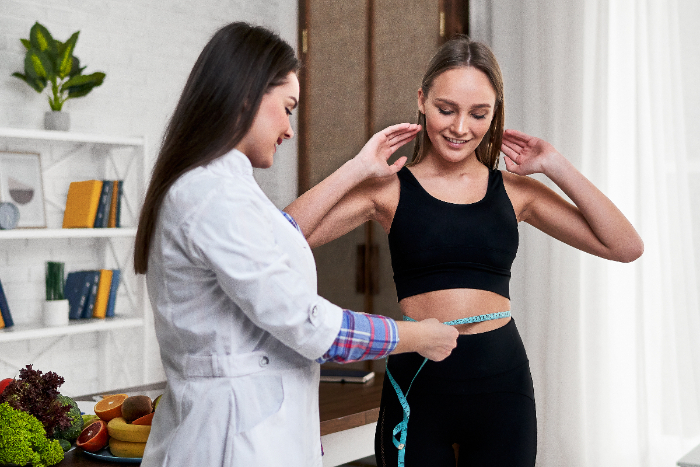

Soy Yessy Indacochea
Soy Yessy Indacochea Asseng, Nutricionista amo y me apasiona la nutrición, por eso realicé estudios profundizando algunas áreas dónde quería especializarme para ayudar a mis pacientes.
Estudié Nutrición Terapeutica, postgrado realizado en España ACENA, Academia de Naturopatía. Medicina Ayurveda postgrado realizado en la Facultad de Medicina UNR - Argentina.
Me especialicé en Alimentación vegetariana y vegana realizando cursos y ampliando conocimientos.
Estudié en la UCU Universidad Concepción del Uruguay "Cáncer y Alimentación - Epigenética".
Jornadas y especializaciones en Medicina y Obesidad.
Trabajo con un abordaje integral sobre una nutrición natural, dónde me encanta a través de los alimentos ingresar al cuerpo de cada paciente para Transformar sus vidas.
Y poder demostrarles que el alimento les puede devolver la salud así como el peso ideal, según su estructura y biotipo.
Cada persona necesita un alimento especial y no todos lo mismo, por eso los planes alimentarios que elaboro son personalizados de acuerdo a tus necesidades individuales.

